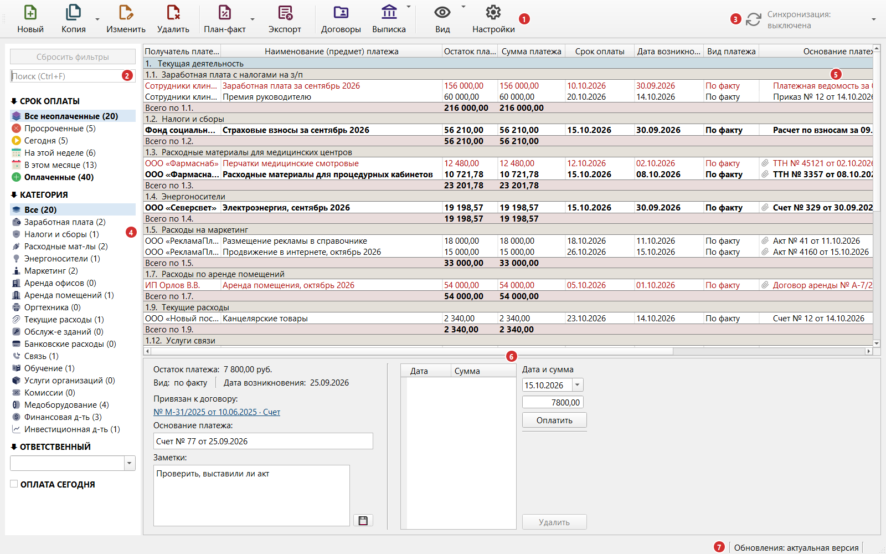
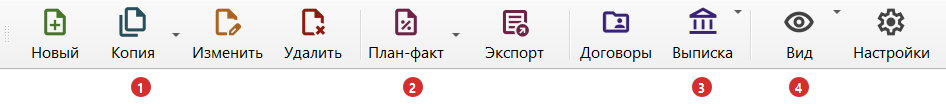
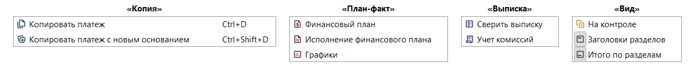
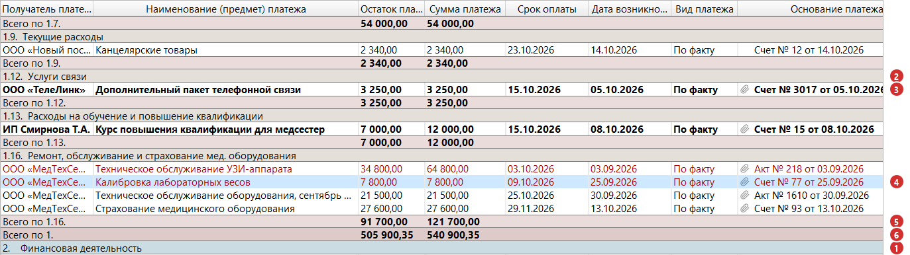
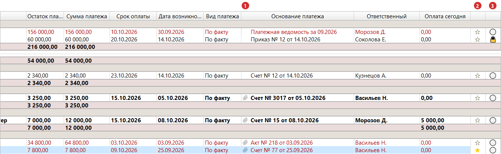
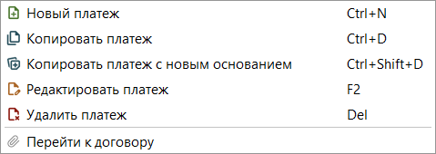
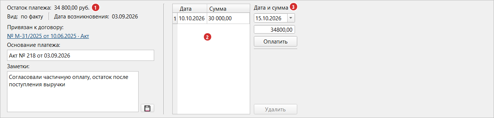

Раздел 2. Главное окно |
В главном окне вы смотрите, какие платежи предстоят и какие просрочены, отмечаете оплаты и открываете остальные окна. Здесь описано, как читать таблицу платежей; работа с платежами и фильтрами — в разделах 3–5.
Из чего состоит окно |

Рис. 3. Главное окно программы.
| № | Часть окна | Что в ней |
|---|---|---|
| 1 | Панель инструментов | Работа с платежами и открытие других окон |
| 2 | Поле поиска | Поиск платежа по тексту (раздел 5) |
| 3 | Кнопка синхронизации | Состояние общей базы (раздел 14) |
| 4 | Боковая панель | Группы фильтров: срок оплаты, категория, ответственный (раздел 5) |
| 5 | Таблица платежей | Платежи, сгруппированные по разделам |
| 6 | Панель сведений | Подробности выбранного платежа |
| 7 | Строка состояния | Служебные сообщения программы |
|
💡 Совет. Программа запоминает размер и положение окна, ширину столбцов, границы между частями и пункты «Заголовки разделов» и «Итого по разделам». |
Панель инструментов |
Четыре кнопки открывают меню: у «Копии» и «План-факта» — по стрелке справа (сама кнопка выполняет главную команду), у «Выписки» и «Вида» — по нажатию.
| Кнопка | Что делает | Горячая клавиша | Подробнее |
|---|---|---|---|
| «Новый» | Команда «Новый платеж» | Ctrl+N | Раздел 3 |
| «Копия» | Кнопка — «Копировать платеж». В меню по стрелке — ещё «Копировать платеж с новым основанием» | Ctrl+D («Копировать платеж»), Ctrl+Shift+D («Копировать платеж с новым основанием») | Раздел 3 |
| «Изменить» | Команда «Редактировать платеж» | F2 или двойной щелчок по строке | Раздел 3 |
| «Удалить» | Команда «Удалить платеж» | Del | Раздел 3 |
| «План-факт» | Кнопка — «Исполнение финансового плана». В меню: «Финансовый план», «Исполнение финансового плана», «Графики» | Раздел 11 | |
| «Экспорт» | Выгрузка таблицы в файл | Ctrl+E | Раздел 10 |
| «Договоры» | Команда «Контрагенты и договоры» | Раздел 6 | |
| «Выписка» | Меню: «Сверить выписку», «Учет комиссий» | Разделы 8 и 9 | |
| «Вид» | Меню из трёх выключателей: «На контроле» (только платежи со звёздочкой), «Заголовки разделов» и «Итого по разделам». Сразу после установки включены два последних | Раздел 5 и ниже в этом разделе | |
| «Настройки» | Окно настроек | Раздел 12 | |
| «Справка» | Это руководство. Слева содержание, справа текст раздела | F1 | Раздел 0 |

Рис. 4. Панель инструментов. Меню раскрываются у кнопок: 1 — «Копия» (по стрелке), 2 — «План-факт» (по стрелке), 3 — «Выписка», 4 — «Вид».

Рис. 5. Меню кнопок. В меню «Вид» включённый пункт обведён рамкой вокруг значка, на кадре так выделены «Заголовки разделов» и «Итого по разделам»; у выключенного пункта («На контроле») рамки нет.
«Копировать платеж», «Редактировать платеж» и «Удалить платеж» недоступны, если не выбран платеж (в том числе выбрана строка раздела или итога).
Кнопка синхронизации показывает состояние («данные актуальны», «выключена» и т. д.); по нажатию открываются настройки, если синхронизация выключена. Меню по стрелке: «Синхронизировать сейчас», «Настройки синхронизации…». Подробнее — в разделе 14.
Все горячие клавиши собраны в приложении 3.
Боковая панель |
Боковая панель: кнопка «Сбросить фильтры», поиск и группы фильтров.
«Сбросить фильтры» (Ctrl+R) возвращает исходное состояние: выбран пункт «Все неоплаченные» (только платежи с остатком). Подробнее — в разделе 5.
Таблица платежей |
Платежи сгруппированы по категориям, а категории объединены в разделы. Порядок строк фиксирован:
Сортировки по заголовкам столбцов нет: ищите фильтрами и поиском. Подраздел без платежей не показывается. Если платежей нет совсем, видна надпись «Нет платежей, подходящих под условия фильтрации и поиска».
Раздел — крупная группа платежей («Текущая деятельность»), подраздел — её часть («Услуги связи»). Номер раздела — «1.», подраздела — «1.12.».

Рис. 6. Фрагмент таблицы. 1 — заголовок раздела; 2 — заголовок подраздела; 3 — платеж со сроком сегодня; 4 — просроченные платежи; 5 — итог подраздела; 6 — итог раздела. Светло-голубым выделен выбранный платеж.
Пункт «Заголовки разделов» убирает эти строки. Заголовки не показываются также при выбранной категории и при поиске.
Итоги — «Всего по 1.12.» (подраздел), «Всего по 1.» (раздел) и «ВСЕГО» (вся таблица) — складывают столбцы «Остаток платежа», «Сумма платежа» и «Оплата сегодня».
Цвета зависят от срока оплаты и остатка:
| Как выглядит строка | Что означает |
|---|---|
| Красный текст | Платеж просрочен: срок оплаты раньше сегодняшнего дня, а платеж считается неоплаченным (остаток больше нуля или платеж оплачен полностью сегодня) |
| Полужирный текст | Срок оплаты сегодня, а платеж считается неоплаченным (остаток больше нуля или платеж оплачен полностью сегодня) |
| Обычный текст | Срок оплаты ещё не наступил |
| Светло-голубая заливка | Платеж выбран, это не цвет срока |
| Цветная заливка строки с названием раздела или подраздела | Заголовок |
| Цветная заливка строки «Всего по …» | Итог |
Платеж, полностью оплаченный сегодня, до конца дня считается неоплаченным и сохраняет цвет по сроку оплаты; завтра он станет «Оплаченным» (раздел 4).
Цвета, жирность и размер шрифта меняются в «Настройки» → «Отображение»; описанные цвета — по умолчанию.
|
⚠️ Внимание. При фильтре «Просроченные» или «Сегодня» (и флажке «ОПЛАТА СЕГОДНЯ») соответствующая подсветка отключается: просроченные платежи не будут красными. |
| Столбец | Что показывает |
|---|---|
| Получатель платежа | Кому платим |
| Наименование (предмет) платежа | За что платим |
| Остаток платежа | Сумма платежа минус все оплаты |
| Сумма платежа | Полная сумма платежа |
| Срок оплаты | Дата, к которой нужно заплатить |
| Дата возникновения | Дата события, от которого считается срок (например, дата счёта) |
| Вид платежа | «По факту», «предоплата» или «возврат» (раздел 3) |
| Основание платежа | Документ, например «Счет № 15 от 04.10.2026» |
| Ответственный | Сотрудник |
| Оплата сегодня | Сумма оплат, внесённых сегодняшним числом |
| ★ | Отметка «На контроле» |
| 🔒 | Отметка «Скрытый платеж» |
Столбцы «Общая сумма платежа», «Основание платежа», «Ответственный», «Вид платежа» и «Дата возникновения» можно отключить: «Настройки» → «Таблица» → «Данные в основной таблице».
|
💡 Совет. Столбцы «★» и «🔒» — в конце таблицы: на небольших экранах их не видно без прокрутки вправо. |

Рис. 7. Правая часть той же таблицы. 1 — скрепка (платеж привязан к договору); 2 — отметка «На контроле»; 3 — отметка «Скрытый платеж».
|
⚠️ Внимание. Звёздочка и замок меняются одним щелчком, без подтверждения. |
Команды платежа доступны и по правой кнопке мыши.

Рис. 8. Контекстное меню строки платежа.
| Команда | Что делает | Горячие клавиши |
|---|---|---|
| «Новый платеж» | Новый платеж | Ctrl+N |
| «Копировать платеж» | Новый платеж с данными выбранного | Ctrl+D |
| «Копировать платеж с новым основанием» | Новый платеж по тому же документу договора | Ctrl+Shift+D |
| «Редактировать платеж» | Изменение платежа | F2 или двойной щелчок |
| «Удалить платеж» | Удаление платежа | Del |
| «Перейти к договору» | Документ договора, к которому привязан платеж | — |
«Копировать платеж с новым основанием» и «Перейти к договору» доступны только для платежа, привязанного к документу договора; первая — не для возврата (раздел 3).
Панель сведений |

Рис. 9. Панель сведений. 1 — сведения о платеже и заметки; 2 — история оплат; 3 — блок внесения оплаты.
Панель состоит из трёх частей.
Сведения о платеже (1):
| Поле | Что показывает |
|---|---|
| Остаток платежа | Сколько осталось заплатить |
| Вид | «по факту», «предоплата» или «возврат» |
| Дата возникновения | Дата события, от которого считается срок оплаты |
| Привязан к договору | Ссылка на документ договора вида «№ М-31/2025 от 10.06.2025 · Акт» или серое «не привязан» |
| Основание платежа | Только для чтения; изменить — через «Редактировать платеж» (раздел 3) |
| Заметки | Ваш текст о платеже |
Заметку можно писать прямо в панели; сохраняется кнопкой 💾 или Ctrl+S, а при выборе другого платежа — сама.
История оплат (2): оплаты платежа с датой и суммой.
Внесение оплаты (3): дата, сумма, кнопки «Оплатить» и «Удалить»; по умолчанию — сегодня и остаток платежа (раздел 4).
Строка состояния |
Надписи в правой части строки состояния:
| Надпись | Что означает |
|---|---|
| «Последняя синхронизация: 14:35» | Когда синхронизация в последний раз прошла успешно. Для прошлых дней добавляется дата. Надпись есть только при включённой синхронизации |
| «Резервная копия: ОШИБКА СОЗДАНИЯ» (красная) | При запуске не удалось сохранить резервную копию (раздел 13) |
| «Обновления: актуальная версия» | Установлена последняя версия |
| «Обновления: доступна 2026.11.02» (с номером новой версии) | Вышла новая версия (раздел 15) |
| «Обновления: ошибка» | Не удалось проверить (например, нет интернета) |
| «Обновления: отключены» | Проверка обновлений выключена |
Слева на несколько секунд может появиться сообщение «Не удалось связаться с сервером синхронизации. Повторим попытку через … с (осталось попыток: …)». Ничего делать не нужно: программа повторит синхронизацию сама.
Если что-то пошло не так |
| Что вы видите | Что случилось | Что делать |
|---|---|---|
| Сообщение «Выбранный платеж больше не отображается в таблице - вероятно, изменились условия фильтрации. Выберите платеж заново.» | Вы запустили команду для платежа (например, «Копировать платеж»), но платеж уже скрыт фильтром или поиском | Измените фильтры или сбросите их (Ctrl+R), выберите платеж и повторите команду |
| Таблица пуста, видна надпись «Нет платежей, подходящих под условия фильтрации и поиска» | Фильтры или поиск оставили ноль платежей | «Сбросить фильтры» |
| Платежа нет в таблице, хотя вы его вносили | Он оплачен, а по умолчанию показаны только неоплаченные | Включите пункт «Оплаченные» в группе «СРОК ОПЛАТЫ» (раздел 5) |
| Вы только что полностью оплатили платеж, но в «Оплаченных» его нет, а в «Все неоплаченные» он остался (остаток пустой) | Платеж, оплаченный сегодня, до конца дня считается неоплаченным. В «Оплаченные» он перейдёт завтра | Найдите его сегодня в «Все неоплаченные» или включите флажок «ОПЛАТА СЕГОДНЯ». Это нормально, ошибки нет |